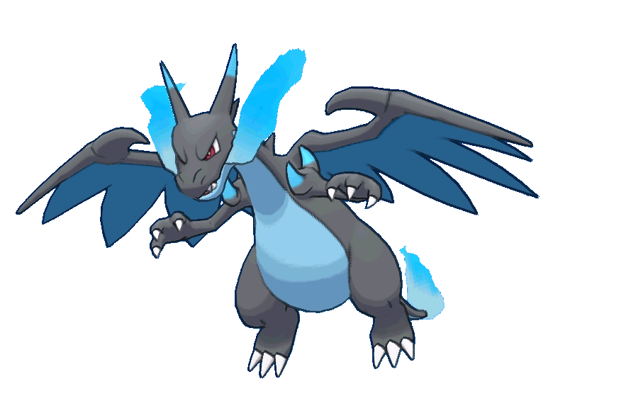
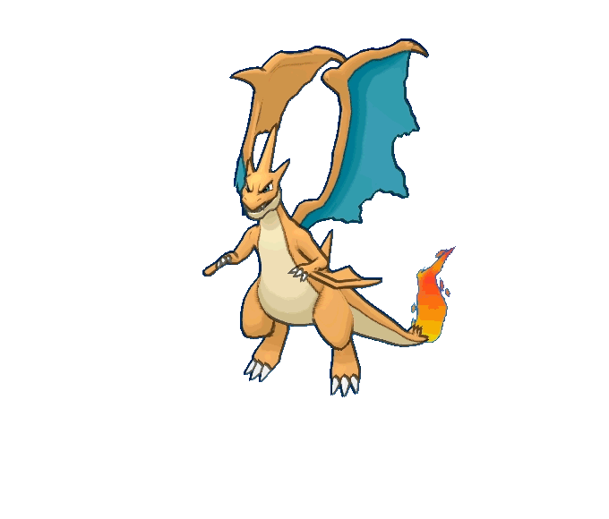

Linha Evolutiva do Pokémon!
Charmander é um dos Pokémon iniciais da região de Kanto,
conhecido
por sua aparência de lagarto com chamas constantemente queimando em sua cauda. Tipo fogo, Charmander é um
companheiro fiel e determinado, evoluindo eventualmente para Charmeleon e depois para Charizard. Sua chama na
cauda é um indicador de sua saúde e emoções; quando está feliz, a chama queima com uma chama brilhante e forte.
Charmander é ágil e versátil em batalhas, usando suas habilidades de fogo para derreter adversários e defender
seus treinadores com lealdade inabalável.

Charmeleon é a evolução vigorosa de Charmander, caracterizada
por seu
temperamento mais forte e sua aparência imponente. Este Pokémon do tipo fogo é reconhecido por suas garras
afiadas e a chama ardente que queima em sua cauda. Charmeleon é conhecido por ser mais independente e
determinado, muitas vezes exibindo uma personalidade teimosa durante as batalhas. Sua habilidade de controlar o
fogo é aprimorada, permitindo-lhe lançar chamas poderosas e inflamar o campo de batalha com sua presença
intimidante. Com a evolução para Charizard no horizonte, Charmeleon representa a fase de crescimento e
maturidade de um treinador Pokémon dedicado.

Charizard é uma das evoluções finais e mais icônicas da linha
evolutiva de
Charmander. Este majestoso Pokémon do tipo fogo e voador é conhecido por sua imponente aparência, com asas
poderosas que lhe permitem voar pelos céus com graciosidade e poder. Sua cauda ardente é um símbolo de sua força
interior e controle sobre o fogo, capaz de incendiar o campo de batalha com suas chamas intensas. Charizard é
não apenas um poderoso combatente, mas também um parceiro leal e protetor para seus treinadores, demonstrando
uma personalidade corajosa e determinada. Com sua presença dominante e habilidades formidáveis, Charizard
continua a ser uma das criaturas mais respeitadas e admiradas no mundo Pokémon.
O Mega Charizard X é uma forma evoluída e impressionante do popular
Pokémon inicial de fogo. Com sua aparência robusta e imponente, este Pokémon adquire uma coloração azulada e
ganha tipos adicionais de Dragão, ampliando sua versatilidade em batalhas. Sua constituição física e habilidades
melhoradas o tornam uma escolha formidável no campo de combate, capaz de lançar poderosos ataques como o Dragon
Claw e o Flare Blitz. A combinação de sua ferocidade e elegância o fazem não apenas uma presença intimidante,
mas também uma favorita entre os treinadores que buscam poder e estilo em suas equipes Pokémon.
O Mega Charizard Y é uma evolução incrível do icônico Pokémon de
fogo, caracterizado por sua aparência majestosa e imponente. Ao mega evoluir, Charizard Y adquire uma coloração
mais vibrante e asas maiores, aumentando sua capacidade de voo e poder de batalha. Este Pokémon ganha o tipo
Adicional de Dragão, ampliando ainda mais suas habilidades e resistências. Com um arsenal de ataques como o
Flamethrower e o Solar Beam à disposição, Mega Charizard Y é uma força a ser reconhecida no campo de batalha,
capaz de derrotar adversários com sua combinação única de elegância e força ardente.